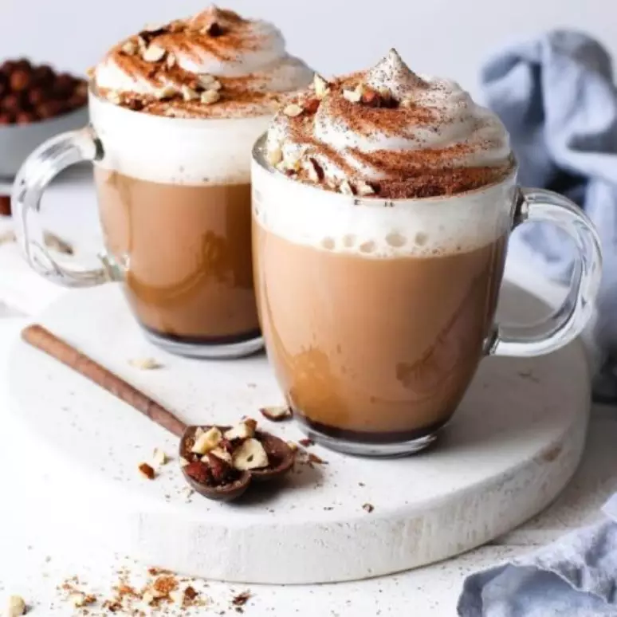
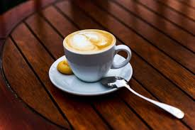
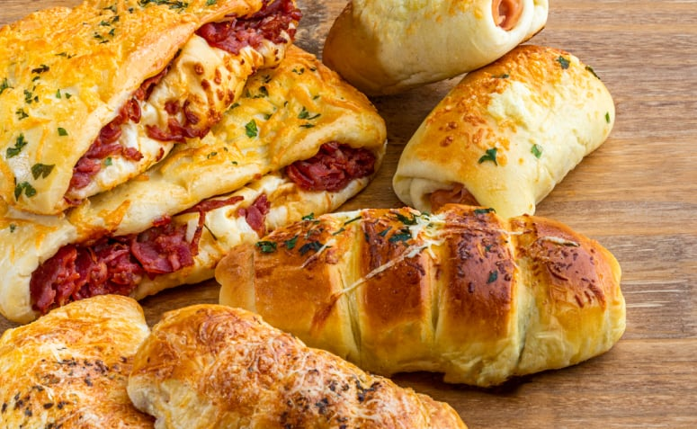
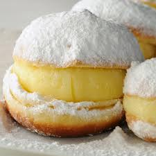

Mais Pedidos
Cappuccino
O Cappuccino da Cafeteria Cacetinho é uma verdadeira obra-prima, preparado com a precisão e carinho que vêm de sua tradição portuguesa. Feito com um café espresso de alta qualidade, misturado com leite cremoso e uma espuma suave, é o equilíbrio perfeito entre o amargo do café e a suavidade do leite. Finalizado com uma leve camada de cacau ou canela polvilhada, esse cappuccino se tornou o queridinho dos clientes, oferecendo uma experiência reconfortante e aconchegante a cada gole. Ideal para acompanhar o famoso cacetinho, é a escolha perfeita para quem busca um momento de prazer e sabor em cada xícara.
Café Expresso
O Café Espresso da Cafeteria Cacetinho é a verdadeira essência do café, preparado com grãos selecionados e torrados na medida certa para garantir um sabor intenso e marcante. Feito com precisão, o espresso tem um aroma envolvente e uma crema dourada que revela toda a riqueza do café. Com um sabor equilibrado, é perfeito para quem aprecia a experiência pura e sem aditivos. Na Cafeteria Cacetinho, o café expresso é mais do que uma bebida, é uma tradição que traz o melhor de Portugal em cada gole, proporcionando uma pausa intensa e cheia de sabor no seu dia.

Coxinha
A coxinha da Cafeteria Cacetinho é um verdadeiro destaque no cardápio, combinando a tradição brasileira com o toque especial da cafeteria. Feita com massa suave e crocante por fora, recheada com frango desfiado e temperado na medida certa, ela conquista pelo sabor caseiro e pela textura impecável. Cada coxinha é preparada com cuidado e atenção, resultando em um salgado irresistível, ideal para acompanhar um café ou ser saboreada a qualquer hora do dia. Uma verdadeira delícia que, apesar de sua origem brasileira, ganha um toque único na Cafeteria Cacetinho, tornando-se um dos itens mais amados pelos clientes.
Varios Salgados
Os salgados da Cafeteria Cacetinho são um capítulo à parte no cardápio, trazendo uma combinação de sabores que agradam a todos os paladares. Cada salgado é feito com ingredientes frescos e de qualidade, preparados com o toque especial da cafeteria, que une a simplicidade da comida caseira com a sofisticação do ambiente. Além das tradicionais coxinhas, há uma variedade de opções como empadinhas, quiches, pastéis e enroladinhos, todos com recheios ricos e bem temperados, perfeitos para uma pausa saborosa. Seja para acompanhar um café, um cappuccino ou até mesmo um chá, os salgados da Cacetinho são sempre uma escolha certeira, oferecendo sabor, textura e aquele gostinho de "feito na hora". Cada mordida é uma experiência de aconchego e prazer, refletindo a tradição portuguesa e a hospitalidade brasileira.
Sonho
O Sonho da Cafeteria Cacetinho é uma verdadeira tentação, inspirado na tradicional iguaria portuguesa, mas com um toque especial que o torna ainda mais irresistível. Feito com uma massa macia e leve, envolta em uma crosta dourada e açucarada, o Sonho é recheado com um creme suave e aveludado, que derrete na boca a cada mordida. A cada fornada, o aroma doce se espalha pelo ambiente, atraindo os clientes que não resistem a esse pedaço de felicidade. Perfeito para acompanhar um café ou cappuccino, o Sonho é a escolha ideal para quem deseja saborear um doce simples, mas cheio de sabor e encanto, refletindo a tradição e o carinho que a Cafeteria Cacetinho coloca em cada detalhe.

Caroline
O doce Caroline da Cafeteria Cacetinho é uma verdadeira obra de arte da confeitaria, que combina sofisticação e sabor em cada detalhe. Inspirado em receitas tradicionais, ele é composto por uma camada delicada de massa folhada crocante, recheada com um creme de baunilha suave e levemente adocicado. Para dar aquele toque especial, o doce é coberto com uma fina camada de açúcar de confeiteiro, criando uma crosta delicada e irresistível. A cada mordida, o contraste entre a crocância da massa e a cremosidade do recheio proporciona uma experiência única. O doce Caroline é perfeito para quem busca um momento de prazer e sofisticação, ideal para ser saboreado junto a um bom café ou cappuccino, tornando-se um dos queridinhos da cafeteria.
 Instagram
Instagram Facebook
Facebook 11 955689752
11 955689752